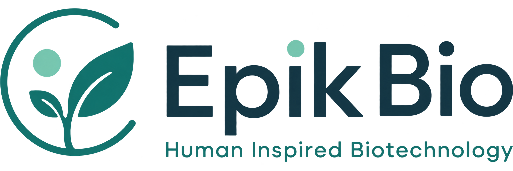
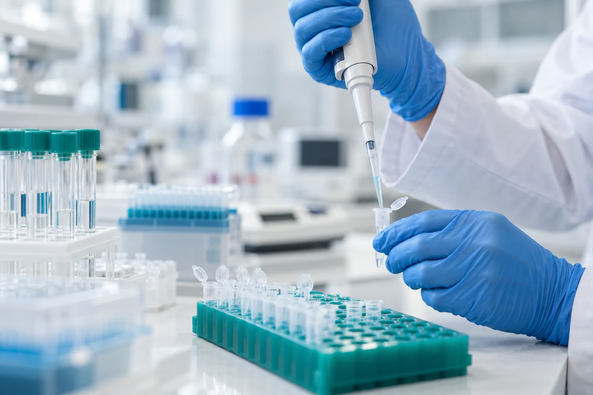
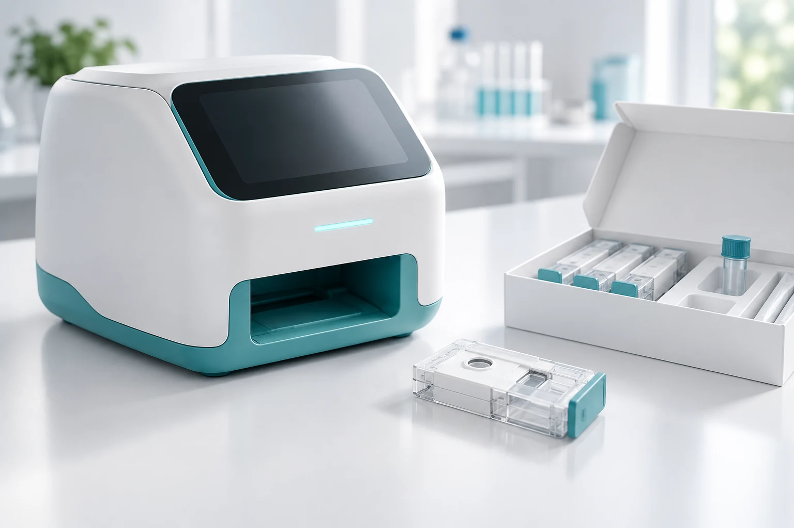

바이오마커 탐색
질환과 관련된 생체 지표를 탐색하고, 후보 바이오마커의 특성과 분석 가능성을 검토합니다.
Biomarker discovery
01 / ABOUT US
에픽바이오는 바이오마커와 AI를 기반으로
질환 진단 기술을 연구합니다.
질환과 관련된 생체 변화를 탐색하고, 데이터 분석을 통해 진단 지표로서의 가치를 검토합니다. 바이오마커 연구와 AI 분석 기술을 토대로 진단 소프트웨어를 개발하고, 향후 진단 키트와 장치의 제품화·생산으로 연구 영역을 넓혀갈 계획입니다.
명확한 연구 설계와
검증으로 근거를 쌓습니다.
생명과학과 AI를 결합해
진단 기술을 연구합니다.
데이터 품질과 재현성을
연구의 기준으로 삼습니다.
02 / RESEARCH & DEVELOPMENT
생체 지표 탐색, AI 분석, 제품화 연구를 통해
진단에 활용할 수 있는 기술을 개발합니다.

생체 신호를 측정하고 데이터를 분석합니다.
반복 검증을 통해 연구 결과의 신뢰성을 높입니다.
질환과 관련된 생체 지표를 탐색하고, 후보 바이오마커의 특성과 분석 가능성을 검토합니다.
Biomarker discoveryAI 개발도구로 분석 모델을 설계·학습·평가하고, 여러 바이오마커에 나타나는 질환 관련 패턴을 연구합니다.
AI & deep learning측정 기술과 분석 소프트웨어의 연계를 검토하고, 진단 키트와 장치의 설계·검증·생산을 위한 개발 기반을 마련합니다.
Diagnostic product development03 / OUR TECHNOLOGY
질환과 관련된 생체 지표의 변화를 분석하고,
여러 지표를 함께 해석하는 방법을 연구합니다.
연구 접근과 검증 방법을 소개합니다.
진단 성능과 임상 결과는 검증 후 안내합니다.
후보 바이오마커를 선정하고, 측정 특성과 데이터 품질을 검토해 분석의 기초를 마련합니다.
AI / COMPUTATIONAL INTELLIGENCE
여러 바이오마커의 특성과 관계를 학습하고,
질환 관련 패턴을 분석하는 모델을 연구합니다.
AI 개발도구를 활용해 바이오마커의 특징을 학습하는 모델을 설계합니다. 모델의 성능과 해석 가능성을 함께 평가하고, 데이터 품질과 편향이 결과에 미치는 영향을 검토합니다.
측정 데이터를 정제하고 결측값과 변동 요인을 검토합니다. 분석에 필요한 바이오마커의 특징을 추출합니다.
데이터 특성과 연구 목적에 맞는 신경망과 학습 방법을 탐색합니다. 비교 모델을 활용해 분석 성능을 평가합니다.
학습·검증·평가 데이터를 분리해 편향과 과적합을 점검합니다. 새로운 데이터에서도 결과가 유지되는지 평가할 계획입니다.
현재 소개된 AI 기술은 연구개발 단계이며, 의료적 진단 서비스로 제공되지 않습니다.
04 / DEVELOPMENT PIPELINE
바이오마커, AI, 소프트웨어, 키트와 장치.
각 개발 분야의 목표와 추진 방향을 소개합니다.
대상 질환과 연구 목적을 설정하고, 후보 바이오마커의 질환 관련성과 측정 가능성을 평가합니다. 분석에 필요한 데이터 확보 방안도 검토합니다.
AI 개발도구를 활용해 여러 지표의 특징과 관계를 분석합니다. 데이터 편향을 점검하고, 다양한 조건에서 모델의 성능과 재현성을 평가하는 방법을 연구합니다.
연구 데이터를 분석하고 결과와 과정을 기록하는 소프트웨어를 개발할 계획입니다. 프로토타입을 통해 기능과 사용성을 검토합니다.
바이오마커 측정 방법에 맞는 진단 키트와 사용 절차를 설계할 계획입니다. 시제품 평가를 토대로 생산 공정과 품질관리 체계를 준비합니다.
측정 장치와 AI 분석 소프트웨어를 연계하는 시스템을 개발할 계획입니다. 시제품의 성능과 사용성을 검토하고, 부품 조달부터 조립·교정·검사까지 생산 기반을 준비합니다.
개발 방향을 소개한 내용입니다. 대상 질환, 바이오마커와 개발 일정은 확정 후 공개합니다.
FUTURE / MANUFACTURING
진단 키트와 장치의 제품화를 목표로
설계, 생산 공정, 품질관리 체계를 검토합니다.

측정 기술과 분석 소프트웨어를 결합해
생산 가능한 진단 제품으로 발전시킬 계획입니다.
사용 목적과 측정 조건을 정리해 키트·장치 시제품을 설계할 계획입니다. 측정 시스템과 AI 분석 소프트웨어의 연계도 검토합니다.
공정 표준화와 공급망을 검토하고, 자체 생산과 전문 제조사와의 협력 등 제품에 적합한 생산 방식을 마련할 계획입니다.
측정 일관성, 제품 검사와 이력 관리의 기준을 마련할 계획입니다. 필요한 성능 검증과 인허가 절차를 거쳐 사업화를 추진합니다.
키트와 장치의 생산은 향후 추진 계획입니다. 생산 방식, 양산 일정과 인허가 진행 상황은 확정 후 안내합니다.
05 / CONTACT
공동연구부터 AI 기술 개발, 진단 제품의 제조 협력까지.
에픽바이오와 함께할 파트너의 제안을 기다립니다.
공식 연락처는 추후 안내할 예정입니다.
아래에서 제안 내용을 작성하고 복사할 수 있습니다.